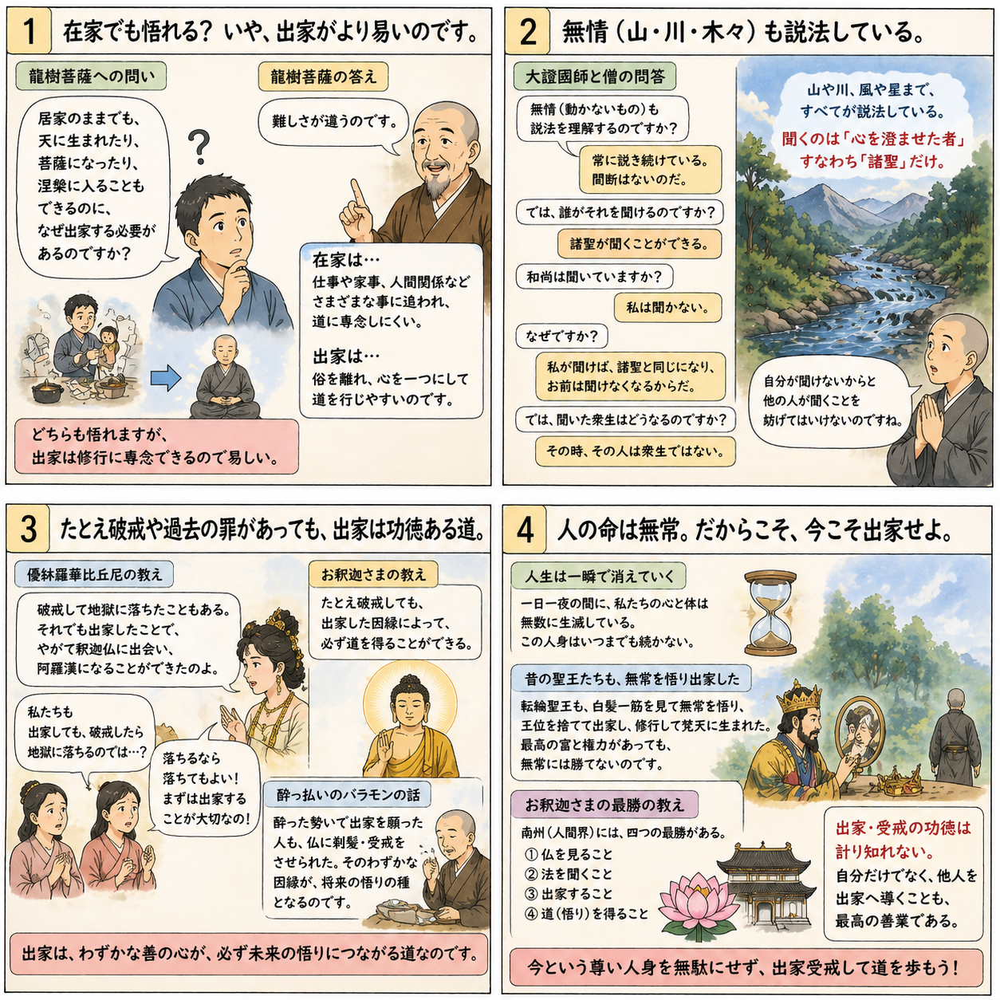

十二巻 巻一覧
正法眼藏第1 出家功徳
本紹介ページの導入・語彙・深掘り・クイズは tools/regen_volume_intro_from_corpus.py が OpenAI API で生成したものです（入力は当巻の原文からの短い抜粋のみ）。内容はモデル出力のため、重要箇所は必ず原文・教本と照合してください。
出典: https://shomonji.or.jp/zazen/doc/genzou.html
原文・現代語訳の全文は 全文ページを参照してください。
この巻の紹介（導入）
龍樹菩薩は、居家戒を持つ者が天上に生まれ、菩薩道や涅槃を得ることができると問うた。
しかし、出家戒の必要性については、居家では道法に専念することが難しいと答えられている。
語彙の足場
- 居家戒：家庭内で守るべき戒律。出家戒に対して、在家の人々が守るべき規範を指す。
- 出家戒：出家した者が守るべき戒律。仏教の修行者としての生活を規定する重要な戒律である。
- 涅槃：仏教における最終的な解脱の状態。苦しみからの完全な解放を意味する。
- 道法：仏教の教えや修行の方法。仏教徒が実践すべき道を指す。
- 魔王：仏教において、修行者の道を妨げる存在として描かれる悪の象徴。
原文（要点の抜粋）
当巻の冒頭付近からの短い抜粋です。長い引用は載せていません。 全文は全文ページを参照してください。出典はリポジトリ内 doc/正法眼蔵.txt です。原文の参照元: https://shomonji.or.jp/zazen/doc/genzou.html
龍樹菩薩言、
問曰、若居家戒、得生天上、得菩薩道、亦得涅槃。復何用出家戒（問うて曰く、居家戒の若きは、天上に生ずることを得、菩薩の道を得、亦た涅槃を得。復た何ぞ出家戒を用ゐんや）。
答曰、雖倶得度、然有難易。居家生業、種種事務。若欲專心道法家業則癈、若專修家業道事則癈。不取不捨、能應行法、是名爲難。若出家、離俗絶諸忿亂、一向專心行道爲易（答へて曰く、倶に得度すと雖も、然も難易有り。居家は生業、種種の事務あり。若し道法に專心せんと欲へば、家業則ち癈す、若し家業を專修すれば道事則ち癈す。取せず捨せずして能く應に法を行ずべし、是れを名づけて難と爲す。若し出家なれば、俗を離れて諸の忿亂を絶し、一向專心に行道するを易と爲す）。
復次居家、憒鬧多事多務。結使之根、衆罪之府、是爲甚難。若出家者、譬若有人出在空野無人之處、而一其心、無心無慮。内想既除、外事亦去。如偈説（復た次に居家は、憒鬧にして多事多務なり。結使の根、衆罪の府なり、是れを甚難と爲す。出家の若きは、譬へば、人有りて、出でて空野無人の處に在りて、其の心を一にして、心無く慮無きが若し。内想既に除こほり、外事亦た去りぬ。偈に説くが如し）。
閑坐林樹間、寂然滅衆惡（林樹の間に閑坐すれば、寂然として衆惡を滅す）、
恬澹得一心、斯樂非天樂（恬澹として一心を得たり、斯の樂は天の樂に非ず）。
人求富貴利、名衣好牀褥（人は富貴の利、名衣、好牀褥を求む）、
斯樂非安穩、求利無厭足（斯の樂は安穩に非ず、利を求むれば厭足無し）。
衲衣行乞食、動止心常一（衲衣にして乞食を行ずれば、動止、心、常に一なり）、
自以智慧眼、觀知諸法實（自ら智慧の眼を以て、諸法の實を觀知す）。
種種法門中、皆以等觀入（種種の法門の中に、皆な以て等しく觀入す）、
解慧心寂然、三界無能及（解慧の心寂然として、三界に能く及ぶもの無し）。
図解（4コマ・AI生成）
教義の根拠は原文・出典に従い、漫画は比喩の補助に留めてください。

深掘り（読解の手掛かり）
- 居家では多くの業務や事務があり、道法に専念することが難しい。
- 出家することで、俗世を離れ、心を一つにして道を行うことが容易になる。
- 出家の功徳は無量であり、居家の五戒よりも優れているとされる。
確認（形成評価）
各設問の下の「採点」で正誤を表示します（ブラウザ内のみ。ログは送りません）。